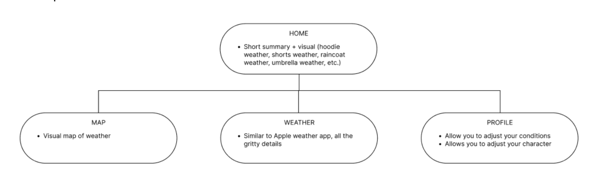
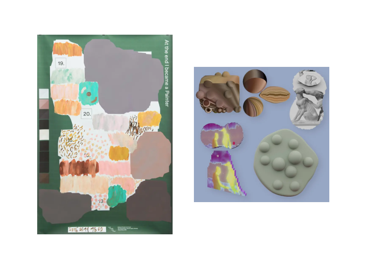

MySky
In this final project for my UI Design Programming course at Seoul National University, I designed an app that aimed to revolutionize the way users approach checking the weather by providing a personalized verdict on what to wear and whether to stay home. The goal is to simplify and personalize the weather-checking process, delivering essential, tailored information at a glance.

Timeline
March - April 2023
(1 month)
My role
UX Design, Web Development
Tools
Figma, VSCode, Github
The Problem
For this project we were asked to reimagine a mundane digital task into a more engaging and enjoyable "personal utility.” Personally, I check the weather each day before getting ready to leave the house. This was particularly true in my time studying abroad in Seoul, as on some days the air quality index necessitated wearing a mask, or especially polluted rain required an umbrella or hat.
It's a common experience for users to have to synthesize various weather parameters to make a decision, which is the somewhat cumbersome process my app aimed to simplify.
The Solution
My goal was to create a novel weather app that streamlines the decision-making process for users by presenting a personalized verdict on the opening screen, emphasizing outfit recommendations and key details, thus eliminating the need for users to sift through multiple weather metrics.
This not only makes the process more efficient but also introduces an element of joy to the otherwise mundane task of checking the weather. The app should allow users to customize their ideal weather conditions and provide detailed weather insights for those interested in more information.
Phase 1: Conceptualization
Concept pitch: Functionally a mixture of the apple weather app and a magic 8 ball.
Ideation: Brainstormed features and functionalities that would simplify the weather-checking process. Focused on the concept of delivering a personalized verdict on the opening screen. The app should additionally allow users to customize their ideal weather conditions and provide detailed weather insights for those interested in more information.
Site Map

Phase 2: Design
Wireframing
Sketched initial wireframes to visualize the app's structure, emphasizing a clean and intuitive design with a prominent personalized weather verdict.
Rough Draft

Reference Pictures

Color Coding
Intermediary Draft

Phase 3: Prototype and Evaluation
Final Prototype
Home: The app's main screen displays essential information such as location, time, temperature, and weather description in a single view. It additionally offers an outfit recommendation based on today’s weather conditions, and displays different color gradient backgrounds that change dynamically based on the current weather conditions, adding a visual touch to the forecast display.
Weather: For users seeking additional weather details such as humidity and wind speed, there is a dedicated screen that offers comprehensive weather information for the day.
Map: Another feature is the weather map screen, which provides a visual representation of the different weather patterns in the user's area.
Settings: The app includes a settings option that allows users to customize their location and ideal weather conditions beyond the default settings. Not depicted here are additional options to change character appearance, temperature measurement, etc.

Conclusion
The iterative design process, from wireframing to prototyping, allowed me to incorporate valuable feedback from my peers and mentors and refine the user interface. This practiced attention to the details of design choices was a reminder that user experience is not only about functionality but also about visual appeal and clarity.
The development of the prototype brought the concept to life, and the integration of the outfit recommendations feature was a fun combination of my interests in art and coding. Furthermore, implementing even a simplified web version of my app on my own exposed me to some of the intricacies of turning a conceptual design into a functional application, such as the importance of my weather API choice to the logic of my weather combinations.
In conclusion, the MySky project, and UI Design Programming at SNU as a whole, was a significant chapter in my design journey. It not only enhanced my technical skills but also deepened my appreciation for the symbiotic relationship between functionality and aesthetics in UX design, and encouraged me to think about designing for joy and artistry, as opposed to just for the corporate world. As I continue to evolve as a designer, I carry forward the lessons learned from MySky – the importance of empathy in design, the iterative and collaborative nature of the creative process, and the power of user-centric solutions to spark joy in everyday experiences.
The development of the prototype brought the concept to life, and the integration of the outfit recommendations feature was a fun combination of my interests in art and coding. Furthermore, implementing even a simplified web version of my app on my own exposed me to some of the intricacies of turning a conceptual design into a functional application, such as the importance of my weather API choice to the logic of my weather combinations.
In conclusion, the MySky project, and UI Design Programming at SNU as a whole, was a significant chapter in my design journey. It not only enhanced my technical skills but also deepened my appreciation for the symbiotic relationship between functionality and aesthetics in UX design, and encouraged me to think about designing for joy and artistry, as opposed to just for the corporate world. As I continue to evolve as a designer, I carry forward the lessons learned from MySky – the importance of empathy in design, the iterative and collaborative nature of the creative process, and the power of user-centric solutions to spark joy in everyday experiences.